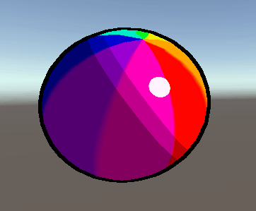

Sari Halonen
Peliohjelmoinnin opiskelija Kotkasta
Pony Game
At first this project was supposed to be about developing a horse themed obstacle jumping game with fairly simple low-poly graphics. I have modelled a low-poly pony years ago during my free time which I was going to use for this project originally.
Inspiraatio
Moss pelin päähenkilö Quill vaikutti suurelta osin siihen millaisen pelaajahahmon halusin peliin. Olin ajatellut alunperin jonkinlaista ihmismäistä koiraeläintä, mutta halusin kokeilla jotain erilaista. Pelasin vähän aikaa sitten läpi Mossin ja tykästyin päähenkilöön. Törmäsin myös sattumalta tähän videoon, jossa Quillin animoinut pelinkehittäjä kertoo kuinka hahmolle pyrittiin luomaan kyky vaikuttaa pelaajan tunnetiloihin. Grafiikkatyylin inspiraationa toiminut osittain Legend of Zelda: Breath of the Wild siinä olevan cell shadingin vuoksi.
Projektin eteneminen
Projektin aloitin sijoittelemalla placeholdereita hahmolle sekä muutamia ympäristöön liittyviä asioita kuten maahan tekstuuria ja puita. Alunperin olikin tarkoitus käyttää ainakin alkuun vain valmiita assetteja, joita on tullut ostettua vuosien varrella, tai vaihtoehtoisesti ilmaiseksi saatavilla olevia.
Melko pian sain kuitenkin idean tehdä pelaajahahmon itse. Blenderistä on runsaasti aiempaa kokemusta, joten mallinnus ja animaatiot valmistuivat melko nopeasti. Mallin tekeminen sekä animointi olivat kuitenkin mukavaa harjoitusta ja mieleenpalauttelua, sillä edellisestä mallinnusprojektista on jonkin aikaa. Enemmän ongelmia aiheutti Blenderin ja Unityn yhteistyö tai enemmänkin sen puute, kun animaatioista toisinaan puuttui osa, tai ne näyttivät aivan muulta kuin niiden kuuluisi.
Grafiikkatyyli
Mietiskelin grafiikkatyyliä jota lähtisin tavoittelemaan ja mieleeni putkahti ajatus, pystyyklö Unityssa tekemään cartoon-tyylistä varjostusta. Vastaavanlaista olen joskus työstänyt Unreal Enginessä ja tykkäsin siitä kovasti. Pienellä Googlettelulla löytyikin tutoriaaleja, joita jouduin käymään useamman läpi, ennen kuin sain oman shaderin toimimaan. Vieressä olevassa animaatiossa näkyy pallon pinnalla cell shading, teräväreunainen valon heijastuma sekä mustat ulkoreunat. Shadereiden siirtäminen pelihahmoon oli melko yksinkertaista, joskin pelihahmon pienehkö koko aiheuttaa jonkin verran ongelmia mustien ulkoreunojen kanssa. Varjot toimivat kuitenkin todella mukavasti. Toistaiseksi shaderista puuttuu tuki useille valonlähteille, sekin neuvottiin samassa tutoriaalissa, mutta toistaiseksi jätin lisäämättä.
Viereisessä animaatiossa näkyy pelihahmon hyppyanimaatio sekä malliin lisätyt cartoon-shaderit, jotka tosin vaativat vielä reilusti säätöä. Animaatioiden siirtymät eivät ole erityisen sulavia, mutta sen korjaan ehkä sitten joskus.
Seuraavat tavoitteet
Seuraavaksi lähden todennäköisesti toteuttamaan niitä varsinaisia rpg-ominaisuuksia, joita varten projekti luotiin. Ensimmäisenä vuorossa voisi olla tavaraluettelon luominen, johon voi vaikka maastosta kerätä esineitä.
Käytetyt tutoriaalit ja lähteet
| Lähde | Tutoriaalin käyttötarkoitus |
|---|---|
| 'Royal Skies' Youtube-tutoriaali | Blender FBX export ja Unity import |
| 'Brackeys' Youtube-tutoriaali | 3. persoonan kamera |
| 'Brackeys' Youtube-tutoriaali | Hyppy ja painovoima |
| 'Ned Makes Games' Youtube-tutoriaali | Cartoon shader |
| 'Ned Makes Games' Youtube-tutoriaali | Cartoon outlines shader |